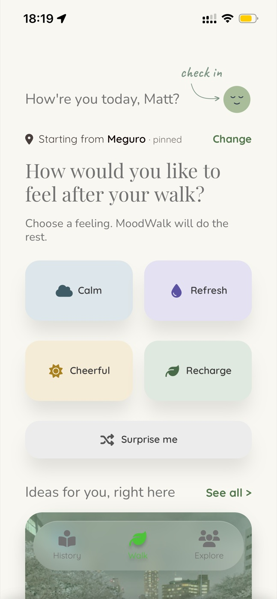
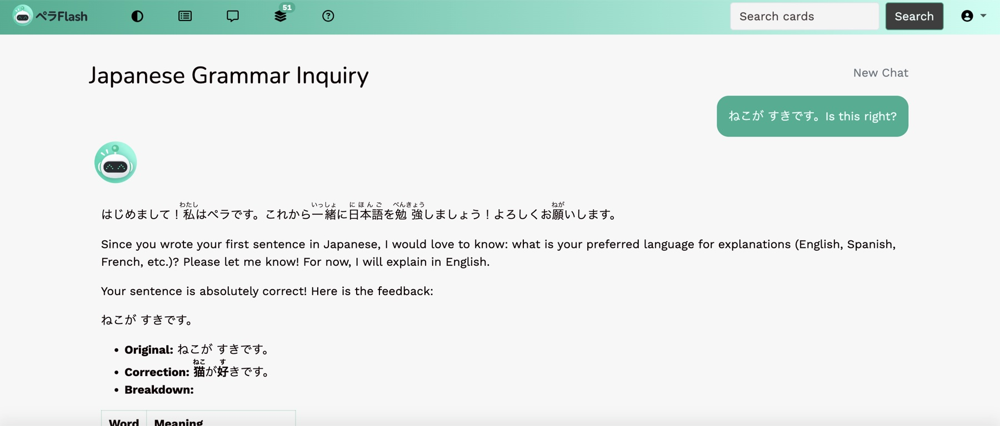
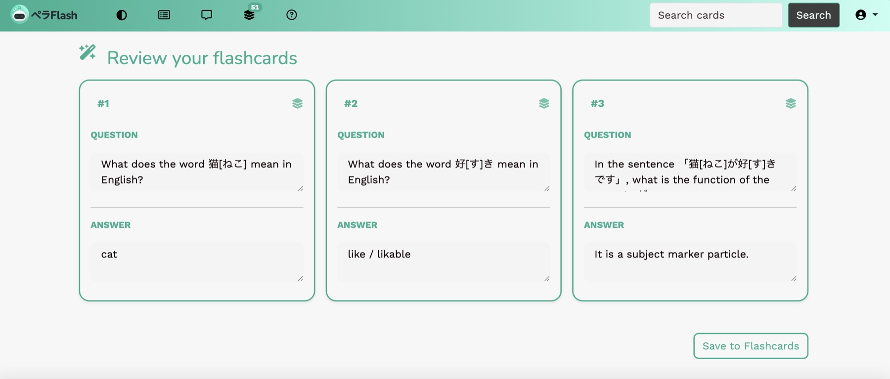

Consulting
I started close to the business — turning ambiguous needs into requirements, data solutions, and something technical teams could actually build.
Deloitte
IDEAS INTO IMPACT
Product × Data × Technology
I make sense of messy problems, find clarity in data, and turn ideas into something real.
Scroll to exploreABOUT
My background spans consulting, data analytics, and hands-on product development. Along the way, I’ve learned to look at problems from different angles — understanding the need, finding evidence in the data, and figuring out how to make an idea actually work.
Same curiosity.
Different lenses.
More possibilities.
EXPERIENCE
From consulting to analytics to hands-on building, each chapter has changed the way I approach problems — and gradually shaped how I work today.
Different experiences.
A clearer me.
I started close to the business — turning ambiguous needs into requirements, data solutions, and something technical teams could actually build.
Deloitte
Working with analytics products taught me to look beyond the request — asking what people actually needed to understand, decide, or do differently.
Publicis Groupe
I wanted to get closer to how ideas become products, so I moved from defining and analysing solutions to prototyping, coding, and shipping them myself.
Le Wagon
SELECTED WORK
01 — PRODUCT THINKING
“I want to go for a walk…
but where do I go?”
reframed as
A walking experience designed around how you want to feel — not where you need to go.



02 — AI PRODUCT BUILD
“What if useful moments in an AI conversation didn’t disappear?”
PeraFlash turns AI chat corrections into editable flashcards, so you can save, learn, and export to Anki.
CONTACT
Open to interesting roles, collaborations, and ideas worth exploring.